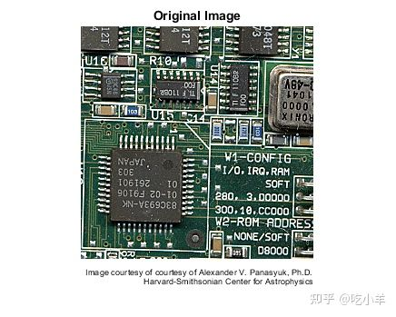

Home
本示例说明如何使用Lucy-Richardson算法对图像进行去模糊处理。当已知点扩展函数PSF（模糊运算符），但是很少或没有关于噪声的信息时，这个算法很有效。模糊且含噪声的图像通过迭代，加速，衰减的Lucy-Richardson算法得以恢复。您可以将光学系统的特性用作输入参数，以提高图像恢复的质量。
步骤1：读取图片
该示例读取RGB图像并将其裁剪为256 x 256 x 3。deconvlucy函数可以处理任何维数的数组。
I = imread('board.tif');
I = I(50+(1:256),2+(1:256),:);
figure;
imshow(I);
title('Original Image');
text(size(I,2),size(I,1)+15, ...
'Image courtesy of courtesy of Alexander V. Panasyuk, Ph.D.', ...
'FontSize',7,'HorizontalAlignment','right');
text(size(I,2),size(I,1)+25, ...
'Harvard-Smithsonian Center for Astrophysics', ...
'FontSize',7,'HorizontalAlignment','right');

步骤2：模拟模糊和噪声
模拟现实生活中的图像，该图像可能由于相机运动或对焦不足而变得模糊。或者由于随机干扰，图像也可能有噪声。该示例通过将高斯滤波器与真实图像进行卷积来模拟模糊（使用imfilter）。然后，高斯滤波器表示点扩展函数PSF。
PSF = fspecial('gaussian',5,5);
Blurred = imfilter(I,PSF,'symmetric','conv');
figure;
imshow(Blurred);
title('Blurred');
该示例通过向模糊图像添加方差为V的高斯噪声（使用imnoise）来模拟噪声。噪声方差V稍后用于定义算法的衰减参数。
V = .002;
BlurredNoisy = imnoise(Blurred,'gaussian',0,V);
figure;
imshow(BlurredNoisy);
title('Blurred & Noisy');
步骤3：还原模糊和含嘈声的图像
仅使用5次迭代即可恢复提供PSF的模糊且嘈杂的图像（默认值为10）。输出是与输入图像相同类型的数组。
luc1 = deconvlucy(BlurredNoisy,PSF,5);
figure;
imshow(luc1);
title('Restored Image, NUMIT = 5');
第4步：迭代探索恢复
生成的图像随每次迭代而变化。要研究图像恢复的演变，您可以分步进行反卷积：进行一组迭代，查看结果，然后从停止的地方继续迭代。为此，必须将输入图像作为单元阵列的一部分传递。例如，通过传入{BlurredNoisy}而不是BlurredNoisy作为输入图像参数来开始第一组迭代。
luc1_cell = deconvlucy({BlurredNoisy},PSF,5);
在这种情况下，输出luc1_cell变为元胞数组。元胞输出由四个数值数组组成，其中第一个是BlurredNoisy图像，第二个是double类的还原图像，第三个数组是前一次迭代的结果，第四个数组是的迭代集的内部参数。输出元胞数组，图像luc1_cell{2}的第二个数字数组与第3步的输出数组——图像luc1相同，除了它们的类可能会有所不同（元胞输出始终提供已恢复的double类图像）。
要继续迭代，请获取上一个函数调用元胞数组luc1_cell的输出，并将其传递给deconvlucy函数。使用默认的迭代次数（NUMIT= 10）。还原的图像是总共15次迭代的结果。
luc2_cell = deconvlucy(luc1_cell,PSF);
luc2 = im2uint8(luc2_cell{2});
figure;
imshow(luc2);
title('Restored Image, NUMIT = 15');
步骤5：通过衰减控制噪声放大
最新的图片luc2是15次迭代的结果。尽管它比5次迭代的早期结果更清晰，但图像仍显示出“斑点”外观。（与真实图像进行比较可知）斑点不对应于任何真实结构，而是将噪声过于紧密地拟合到数据中的结果。
要控制噪声放大，请通过指定DAMPAR参数使用衰减选项。DAMPAR必须与输入图像属于同一类。该算法在与噪声相比差异较小的区域中抑制了模型的变化。这里DAMPAR使用的等于噪声的3个标准偏差。请注意，图像更平滑。
DAMPAR = im2uint8(3*sqrt(V));
luc3 = deconvlucy(BlurredNoisy,PSF,15,DAMPAR);
figure;
imshow(luc3);
title('Restored Image with Damping, NUMIT = 15');
本示例的下一部分将使用模拟的星空图像（为了简化和提高速度），探索deconvlucy函数的WEIGHT和SUBSMPL输入参数。
步骤6：创建样本图像
该示例创建一个四颗星的黑白图像。
I = zeros(32);
I(5,5) = 1;
I(10,3) = 1;
I(27,26) = 1;
I(29,25) = 1;
figure;
imshow(1-I,[],'InitialMagnification','fit');
ax = gca;
ax.Visible = 'on';
ax.XTickLabel = [];
ax.YTickLabel = [];
ax.XTick = [7 24];
ax.XGrid = 'on';
ax.YTick = [5 28];
ax.YGrid = 'on';
title('Data');
步骤7：模拟模糊
该示例通过创建高斯过滤器PSF并将其与真实图像进行卷积来模拟恒星图像的模糊。
PSF = fspecial('gaussian',15,3);
Blurred = imfilter(I,PSF,'conv','sym');
现在模拟一个只能观察到部分恒星图像的相机（只能看到模糊）。创建一个加权函数数组WEIGHT，该数组由模糊图像中心部分的一个（虚线内的“好”像素）和边缘的零（“坏”像素-不接收信号的像素）组成。
WT = zeros(32); WT(6:27,8:23) = 1; CutImage = Blurred.*WT;
为了减少与边框相关的振铃效应，请对给定的PSF应用edgetaper函数。
CutEdged = edgetaper(CutImage,PSF);
figure;
imshow(1-CutEdged,[],'InitialMagnification','fit');
ax = gca;
ax.Visible = 'on';
ax.XTickLabel = [];
ax.YTickLabel = [];
ax.XTick = [7 24];
ax.XGrid = 'on';
ax.YTick = [5 28];
ax.YGrid = 'on';
title('Observed');
步骤8：提供WEIGHT数组
该算法在还原图像时根据WEIGHT数组对每个像素值加权。在我们的示例中，仅使用中央像素的值（其中WEIGHT = 1），而“坏”像素值不包括在优化中。但是，该算法可以将信号功率置于摄像机视野范围之外的这些“坏”像素的位置。注意所解析的恒星位置的准确性。
luc4 = deconvlucy(CutEdged,PSF,300,0,WT);
figure;
imshow(1-luc4,[],'InitialMagnification','fit');
ax = gca;
ax.Visible = 'on';
ax.XTickLabel = [];
ax.YTickLabel = [];
ax.XTick = [7 24];
ax.XGrid = 'on';
ax.YTick = [5 28];
ax.YGrid = 'on';
title('Restored');
步骤9：提供更精细采样的PSF
给定更精细采样的PSF（通过SUBSMPL次数进行细化），deconvlucy可以恢复欠采样图像。为了模拟分辨率较差的图像和PSF，该示例将图像Blurred和原始PSF进行分箱，每个维度上，两个像素一组。
Binned = squeeze(sum(reshape(Blurred,[2 16 2 16])));
BinnedImage = squeeze(sum(Binned,2));
Binned = squeeze(sum(reshape(PSF(1:14,1:14),[2 7 2 7])));
BinnedPSF = squeeze(sum(Binned,2));
figure;
imshow(1-BinnedImage,[],'InitialMagnification','fit');
ax = gca;
ax.Visible = 'on';
ax.XTick = [];
ax.YTick = [];
title('Binned Observed');
使用欠采样的PSFBinnedPSF，恢复欠采样的图像BinnedImage。请注意，luc5图像仅可识别3颗星。
luc5 = deconvlucy(BinnedImage,BinnedPSF,100);
figure;
imshow(1-luc5,[],'InitialMagnification','fit');
ax = gca;
ax.Visible = 'on';
ax.XTick = [];
ax.YTick = [];
title('Poor PSF');
下一个示例使用更精细的PSF（在SUBSMPL-times精细网格上定义）来还原欠采样图像BinnedImage。重建的图像luc6更准确地解析了恒星的位置。请注意，它如何在图像右下角的两颗星之间分配功率。这暗示着存在两个明亮的物体，而不是像先前的修复那样存在一个。
luc6 = deconvlucy(BinnedImage,PSF,100,[],[],[],2);
figure;
imshow(1-luc6,[],'InitialMagnification','fit');
ax = gca;
ax.Visible = 'on';
ax.XTick = [];
ax.YTick = [];
title('Fine PSF');
======================================================================
我的测试结果及程序
下面是我测试的代码：

注：本文根据MATLAB官网内容修改而成。